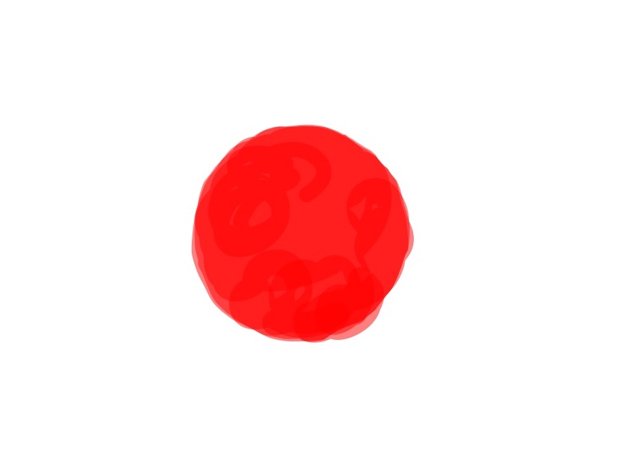
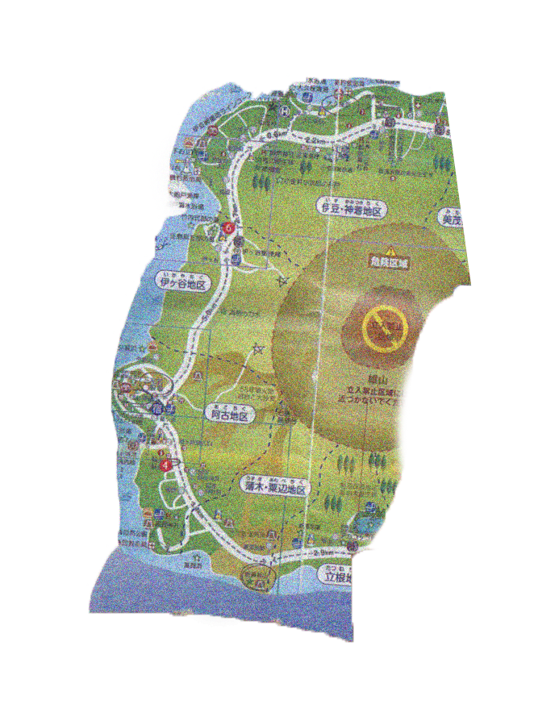
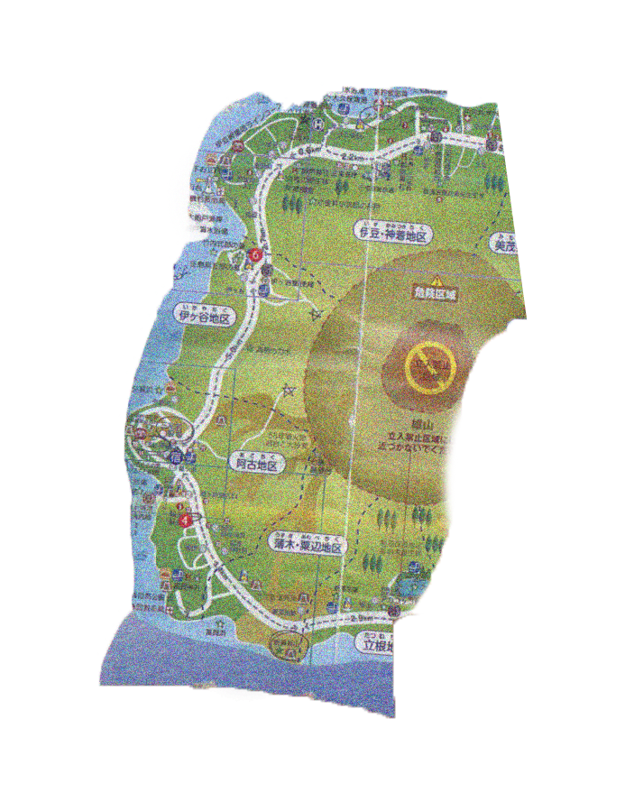
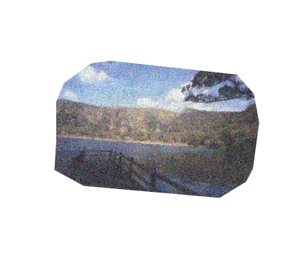
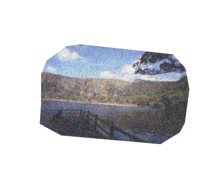
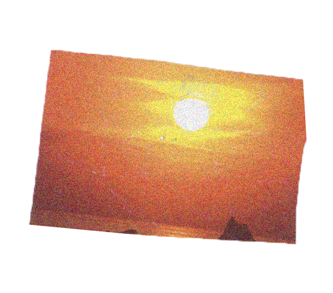
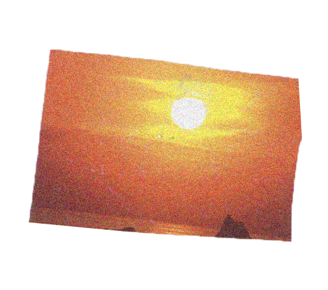
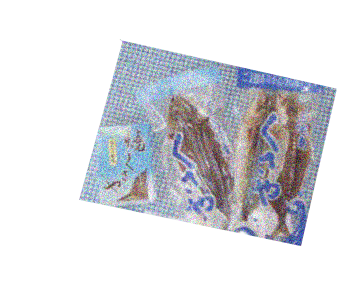
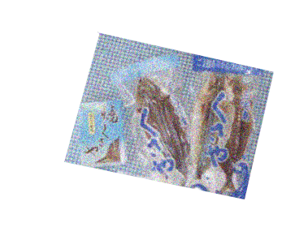

After 6 hours of ferry trip, Miyakejima is one of the islands in the Izu Archipelago. Miyakejima village surrounds one big active volcano called Oyama that is ranked A by Japan Meteorological Agency. The island itself is now a part of Fuji Hakone Izu National Park. Because of the big volcano and it being an island far away from the mainland Japan, it has unique natural features such as dead gray trees among greenery, rocks formed by volcano ashes, and vividly colored birds inhabiting in the island. In spite of the danger of living with the volcano, residents of Miyakejima are flexible and strong people who live with such nature.

 


 

 


 
